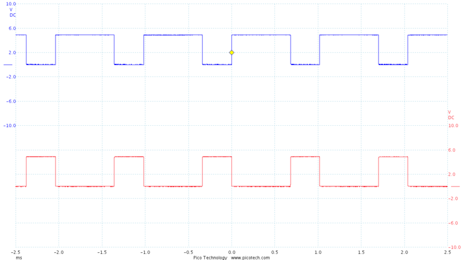

Note this document only references the the rt-stepper dongle in this description, but this document also applies to the rt-stepper 4-axis motor drive. The 4-axis motor drive is a complete CNC controller with the rt-stepper dongle hardware fully integrated.
This document is provided "AS IS" without warranties of any kind including warranties of merchantability, fitness for a particular purpose, or non-infringement of intellectual property.
The rt-stepper dongle is a USB-to-Parallel dongle designed specifically for CNC controllers. This dongle provides CNC parallel port support and real time stepper motor control. Precise step/directon pulses are generated by the dongle. You can use this dongle to convert a parallel port CNC controller into a USB CNC controller.
PC software is used to drive the dongle over the USB bus. The rt-stepper software consists of two major compenents - PyMini and the rtstepperemc library. PyMini is the GUI that provides the user interface. The rtstepperemc library provides the gcode interperter, trajectory planner and dongle IO.
Since the dongle provides the real time step pulse generator no real time kernal is required. This allows PyMini to run on Linux, Mac or Windows. The GUI has the same look and feel in Linux, Mac and Windows. All software is available at the rtstepperemc project https://bitbucket.org/dsuffiel/rtstepperemc.
Simply stated the GNU GPL license does allow the following.
PyMini is a powerful minimalist user interface written in python. A user can write their own gcode program using their favorite text editor or run a CAM generated gcode program on PyMini. You can verify the gcode program with or without the dongle connected and view the xyz paths executed on the backplot panel. All PyMini communication to the dongle takes place through the rtstepperemc library.
The rtstepperemc library is based on the same gcode interpreter and trajectory planner from the EMC/LinuxCNC project at www.linuxcnc.org. Both projects are separate software applications and the dongle will only run with the PyMini software.
There is only one process that runs on the PC - PyMini. PyMini generates the step pulses, but step timing is maintained by dongle thus eliminating the need for a real time kernel. PyMini coverts the gcode instructions into a series of step buffers. Each step buffer is sent over the USB bus to the dongle. The dongle then clocks each step byte out over the parallel port at precise step intervals. Each step byte drives the step/direction pins on the CNC controller parallel port.
See the "Gcode Overview" section at www.linuxcnc.org for gcode syntax. Note, mcodes are handled differently in PyMini. Most mcodes are implemented via python plugin scripts. This means spindle, coolant and homing can be executed via custom python scripts.
The Speed value is used for jogging. The default Speed value is set in the rtstepper.ini file. You can modify the Speed value on the screen, but it is not saved in the ini file. See the Configuration File section to change the default.
Selecting the Absolute Jog button will switch from incremental jogging to absolute position jogging. The default Absolute Jog value is set in the rtstepper.ini file. You can modify the Absolute Jog value on the screen, but it is not saved in the ini file.
Jogging is not available in Auto/Run mode. When running a gcode file the jogging buttons are disabled.
If the EStop occurred during any move command, PyMini will perform an un-synchronized stop. Once stopped the position of the machine is unknown and will require an All Zero command before restarting any move commands.
When PyMini is first started it will try to enumerate the dongle. If the dongle is not found or is unavailable PyMini will automatically come up in EStop mode. Clicking the EReset button will force PyMini to re-enumerate the dongle.
MDI button names and commands can be customized in the rtstepper.ini file. Changes to the MDI commands on screen are not saved to the ini file. See the Configuration File section to change the default.
MDI buttons are not available in Auto/Run mode. When running a gcode file the MDI buttons are disabled.
Use the Auto button to open a gcode file. Once the file is open you can use the Run button to execute the program, or use the Verify button to run the program without stepper motor control. As the program is executed each line is displayed on the log panel and the status bar in the lower right corner.
The backplot panel will provide a graphical display of the tool path as the program executes. This display is optimized for 3-axis mill (xyz). Use the backplot bottom buttons to manipulate the display. The backplot will only operate in Auto/Run/Verify modes. Gcodes are displayed in different colors on the backplot.
G0 = lime green G1 = black G2 = red G3 = blue
Both Run button and Verfiy button have a Cancel button option. When using the Run button cancel the program will execute a synchronized stop. Once the last move has completed you can restart the program without an All Zero command. This different from the EStop button which executes a un-synchronized stop. After an EStop you must issue the All Zero command in order to restart the program.
pymini -i rtstepper.ini
The ini file is a simple ASCII text file that must be customized for each unique CNC controller. Use any text editor to customize the ini file. Multiple ini files can be used for different CNC controllers. The ini file is divided into different sections and key/value pairs. Sections are defined by brackets "[ ]" and key/value pairs are defined by the "=" character. Comment lines start with the "#" character. The rest of this section define some common configuration options and their default values. Generally only these options need to be modified by the user.
[EMC] MACHINE = PyMini (rtstepper.ini) TOOL_TABLE = stepper.tblMACHINE sets the title in the UI application. Useful for identifying what ini file is loaded. TOOL_TABLE sets the name of the tool offsets file. Used to store tool length offsets set by the user.
[DISPLAY] MDI_LABEL_1 = MDI-1 MDI_CMD_1 = G90 G1 X0 Y0 F6 AUTO_FILE = your_file.nc INC_JOG = 0.2 ABS_JOG = 1.0 JOG_SPEED = 6 LATHE = 0MDI_LABEL_1 sets MDI button 1 label.
MDI_CMD_1 sets MDI button 1 gcode command.
PyMini has support for 4 MDI command buttons (MDI_LABEL_1 - MDI_LABEL_4, MDI_CMD_1 - MDI_CMD_4).
AUTO_FILE sets the default Auto gcode file.
INC_JOG sets the default incremental jog (mm or inch).
ABS_JOG sets the default absolute jog (mm or inch).
JOG_SPEED sets the default jog speed (mm/minute or inch/minute).
LATHE sets the Tool Offsets screen for lathe or mill (0 = mill, 1 = lathe).
[TRAJ] AXES = 4 COORDINATES = X Y Z A LINEAR_UNITS = inch DEFAULT_VELOCITY = 0.2 MAX_VELOCITY = 400 DEFAULT_ACCELERATION = 200 MAX_ACCELERATION = 400AXES sets the number of axis that are visible to the gcode interpretor.
COORDINATES sets the name of each axis that are visible to the gcode interpretor. Valid names are "X Y Z A B C U V W" in this order.
LINEAR_UNITS sets the engineering units (inch or mm).
The other parameters set the trajectory planner default velocity and acceleration in engineering units. In the above example this would be 0.2 inches/second or 12 inches/minute (12 = 0.2 * 60). This sets the trajectory planner overall acceleration and velocity then each axis can be fine tuned individually in the AXIS section.
[AXIS_n] MAX_VELOCITY = 0.15 BACKLASH = 0.0 INPUT_SCALE = 32000 COORDINATE = X STEP_PIN = 2 DIRECTION_PIN = 3 STEP_ACTIVE_HIGH = 0 DIRECTION_ACTIVE_HIGH = 0There is a AXIS section for each axis (AXIS_0 - AXIS_3).
MAX_VELOCITY specifies the max velocity for this axis. In the example this would be 0.15 inches/second.
BACKLASH is the amount of backlash or "play" in your XYZ lead screw. Start with zero then after tuning your CNC system, measure your backlash and enter the values here. Note, backlash compensation is a poor substitute for good lead screws. Excessive backlash can "throw" the table, causing inaccurate cuts and or broken tool.
INPUT_SCALE define the stepper motor steps/inch for this axis. This is a function of your motor, lead screw and CNC controller. Metric values can be used here instead of inch.
COORDINATE assigns one of the XYZABCUVW coordinates to this axis or step/direction pair. One coordinate may map to more than one axis for example on a gantry with two Y stepper motors. This means one can drive both stepper motors by slaving the Y axis to the A axis instead of hard wiring the two stepper motors in parallel.
Here are some notes on how to calculate the INPUT_SCALE for a Sherline mill using the using a Xylotex 3-axis CNC controller and 269 oz.in steppers.
1.8 = degrees/step 360 / 1.8 = 200 steps/revolution .050 = one revolution of the lead screw 200 / .050 = 4000 steps/inch full steps Since the Xylotex CNC controller board is set to 1/8 stepping. 4000 * 8 = 32000 steps/inch = INPUT_SCALE
STEP_PIN specifies the step pin on the DB25 connector for this axis. Only pin numbers 2-9 are valid.
DIRECTION_PIN specifies the direction pin on the DB25 connector for this axis. Only pin numbers 2-9 are valid.
STEP_ACTIVE_HIGH specifies the polarity of the step signal (0 = active_low, 1 = active_high).
DIRECTION_ACTIVE_HIGH specifies the polarity of the direction signal (0 = active_low, 1 = active_high).
The default values for step/direction pins will work for many commercial CNC controller boards. Note, the dongle supports 8 digital output signals on DB25 connector pins 2, 3, 4, 5, 6, 7, 8 and 9. Your CNC controller MUST be built to use these pins, most commercial boards are.
[TASK] INPUT0_ABORT = 0 INPUT1_ABORT = 0 INPUT2_ABORT = 0 INPUT3_ABORT = 0 (1) INPUT1_MODE = 0 (1)(2) INPUT2_MODE = 0 (1)(2) INPUT3_MODE = 0 (1)(2) OUTPUT0_MODE = 0 (1)(3) OUTPUT1_MODE = 0 (1)(3) (1) Only rt-stepper dongle REV-3f or later. (2) INPUTx can be Digital or ADC. ADC = 8-bit resolution, 62.5k clock, 5v voltage reference (3) OUTPUTx can be Digital or PWM. PWM = 8-bit timer, 0-255 duty cycle, 976.5625hz,Use the INPUTx_ABORT option to automatically trigger a un-synchronized estop. Any INPUTx_ABORT option can be used to enable a estop. Generally the digital input signals are used for limit switches. See the Limit Switches section for wiring details. Input signals must be digital for any INPUTx_ABORT.
When "INPUTx_ABORT=0" the un-synchronized estop is disabled. This is the default.
When "INPUTx_ABORT=1" an "active high" transition on the INPUTx pin will cause a un-synchronized estop.
INPUT0 pin can be used as a frequency counter or a limit switch, but NOT both. The frequency counter is only available on INPUT0 and is used for measuring spindle speed (RPM). In order to enable the frequency counter option "INPUT0_ABORT=0" must be set.
INPUTx_MODE specifies the input function - digital or ADC (0 = digital, 1 = ADC). Digital is the default. ADC is analog to digital conversion with a 8-bit result. You can set the INPUTx_MODE here, or at runtime with python plugin script. There are two example python scripts that demonstrate how to use ADC - M196 sets the input mode, M197 prints the ADC result (plugin/m196.py, plugin/m197.py).
OUTPUTx_MODE specifies the output function - digital or PWM (0 = digital, 1 = PWM). Digital is the default. Note if PWM is enabled OUTPUT0 is inverted and OUTPUT1 is non-inverted. PWM duty cycle is settable from 0-255. You can set the OUTPUTx_MODE here, or at runtime with python plugin script. There are two python scripts that demonstrate how to use PWM - M194 sets the output mode, M195 sets the PWM duty cycle (plugin/m194.py, plugin/m95.py).
Different tools used for machining operations in a program may vary in length. It is obviously simpler to have a single zero point for all tools, that is what PyMini allows you to do with the All Zero button, but the system can be directed to compensate for offset variations in the program by using the T-word to select one of Tool number 1-10.
Using this screen one could set Tool number 2 to -0.1 offset and diameter of 0.125 inch. Nothing is saved until the Ok button is pressed.
Each tool can be selected with a gcode block. The following example selects Tool number 2.
T2 M6 G43T2 will select Tool number 2 for the next tool change, M6 calls a python script (plugin/m6.py) to perform a tool change and G43 tells the program to start using the offset. M6 will cause a program pause so the user can manually change the tool, then click the Resume button. The status LED will turn orange when the program is paused. The m6.py script can be customized, see the Python Script section.
This tool length offset will be active until the next tool change command. In PyMini clicking the All Zero button will reset the offset back to zero.
All tool length offsets are stored in a file specifed by the TOOL_TABLE option in the ini file. When the PyMini application is started for the first time and there is no existing TOOL_TABLE file, a new file is generated with each tool length offset set to zero. When the gcode program first starts no tool length offsets are active until the first T-word is selected. Clicking the Cancel button in Auto mode will reset any active T-word offsets. PyMini XYZ position will display the gcode command_position + offset.
By default the Tool Offsets screen will only display mill parameters. If your system is a lathe instead of a mill, you can enable the lathe parameter screen. In the *.ini file DISPLAY section set the LATHE option equal to 1. Tool Offset descriptions are the same as EMC2/LinuxCNC at www.linuxcnc.org.
The All Zero button will set the Machine Origin, normally this is also the Program Origin. You can change the Program Origin with G54-G59. When the gcode program first starts G54 is the default offset. Using this screen one could set G55 to the location of a second part, G56 to the location of a third part, etc.
This is an interactive screen. One can jog to specific location and use the Teach button to read the current position for that axis. Nothing is saved until the Ok button is pressed.
Here a index pulse was generated with the rt-stepper sensor kit on a Sherline 2000 mill. The period is a little less the 20ms which represents about 3200 RPM.
Note, the index pulse also provides spindle synchronization support for G33 and G76 threading commands.
apt-get install python-tk
cp 55-rt-stepper.rules /etc/udev/rules.d
The LED should be on solid (no blinking).
The rt-stepper 4-axis motor drive is a complete CNC controller with the rt-stepper dongle hardware fully integrated. The power up sequence for the 4-axis motor drive is different since it is externally powered. The means the 4-axis motor drive will not enumerate as a USB device without the 12-24VDC power supply plugged in. Use this power up sequence when powering up the 4-axis motor drive.
IMPORTANT!! Do not unplug the stepper motors while the 4-axis motor drive is powered up with the 12-24VDC.
IMPORTANT!! The rt-test program must be performed with no CNC controller (or stepper motors) connected.
rt-test will verify that your USB subsystem on your PC can drive the rt-stepper dongle. From the command line in the PyMini directory run "rt-test.py", or for Windows run "python.exe rt-test.py" and the following checks will be made.
Before we can cut any real parts we must tune rt-stepper with the CNC system. At this point the INPUT_SCALE values, see the Configuration File section, should be correct for your CNC controller.
Since rt-stepper has it's own real-time clock, tuning is very simple. All we have to determine is the MAX_VELOCITY for each axis on the CNC system. Then update the ini file with the new values.
The MAX_VELOCITY is the max speed the stepper motors can operate at. Stepper motors will go out of sync if they are accelerated or decelerated too suddenly. This is because the magnetic fields are advancing faster than the rotor can keep up. Once a motor is out of synchronization further CNC stepping is useless as the position of that axis has been lost.
For tuning purposes the measured MAX_VELOCITY should be less than the current MAX_VELOCITY values in the ini file. The initial values in the default ini file should be a good starting point for tuning.
The MAX_VELOCITY is a very important control variable and can be used for the following functions.
When tuning is complete you are ready to start cutting parts.
The rt-stepper dongle supports three "active high" input signals called INPUT0, INPUT1 and INPUT2. Although any of the three input signals can be used for limit switches, the following example uses INPUT1 leaving INPUT0 reserved for the index pulse. Multiple switches are wired in-series as normally closed switches connected to CNC ground.
This configuration frees up INPUT2 for other uses and provides simple in-series cable wiring. With "active high" digital input signals a broken wire will be detected immediately.
INPUT0-2 have a internal pull up resistors so no external power or pull up resistor is required. INPUT0-2 use a Schmitt Trigger input buffer for noise immunity, but care should still be taken with the switch wiring. Do NOT route switch wires near power wires.
INPUT0-2 can be used to signal an un-synchronized estop of the current CNC controller move. This functionality can be enabled via the ini file. See the "INPUTx_ABORT" option in the Configuration File section.
The "input0-2_abort" option has a small amount of software overhead so the abort sequence may not be immediate. Depending on how fast your PC is, some extra steps may be executed after a switch has been tripped. The number of extra steps will be feed rate dependent. Switches should be chosen that can handle any extra steps without being damaged.
Note if you want to measure spindle speed with the index pulse you must use INPUT1 or INPUT2 for limit switches. See the connector sections for which pin to connect to.
What can you do with python a script? Scripts can perform the same functions as PyMini. Python scripts that execute spindle and coolant mcodes are included with the rtstepperemc software. Here is the python script file (plugin/m3.py) for turning the spindle on.
#
# m3.py - m3 mcode script turns spindle on clockwise.
#
# inputs:
# p_num = rpm # S parameter (spindle speed)
# q_num = n/a
#
# example:
# m3 s250.0
#
import pyemc
M3_SPINDLE_ON_ENABLE = True
def run(dongle, p_num, q_num):
if (not M3_SPINDLE_ON_ENABLE):
return pyemc.MechResult.EMC_R_OK
dongle.dout_set(pyemc.MechOutputNum.OUTPUT0)
return pyemc.MechResult.EMC_R_OK
A similar python script file (plugin/m5.py) would turn the spindle off. When first installed spindle and coolant python scripts are disabled by default. This allows the user to customize which OUTPUT0-1 signals are used.
The rtstepperemc software supports homing with user-defined mcodes. Included with PyMini is an example python script file that implements the user-defined mcode M190 (plugin/m190.py). This is simple script file will home a specified axis. The user will need to customize the script for their CNC application. M190 can be executed as a MDI command or from a gcode file.
M190 P0 Q0 (use INPUT0 for estop, home x-axis) M190 P0 Q1 (use INPUT0 for estop, home y-axis) M190 P0 Q2 (use INPUT0 for estop, home z-axis)
M191 P0 Q0.0 (zero x-axis) M191 P1 Q0.0 (zero y-axis) M191 P2 Q0.0 (zero z-axis)
M192 p0 q1 (set DB14-OUTPUT0) M192 p0 q0 (clear DB14-OUTPUT0) M192 p1 q1 (set DB16-OUTPUT1) M192 p1 q0 (clear DB16-OUTPUT1)
OUTPUT0 = 30% duty cycle inverted OUTPUT1 = 30% duty cycle non-inverted